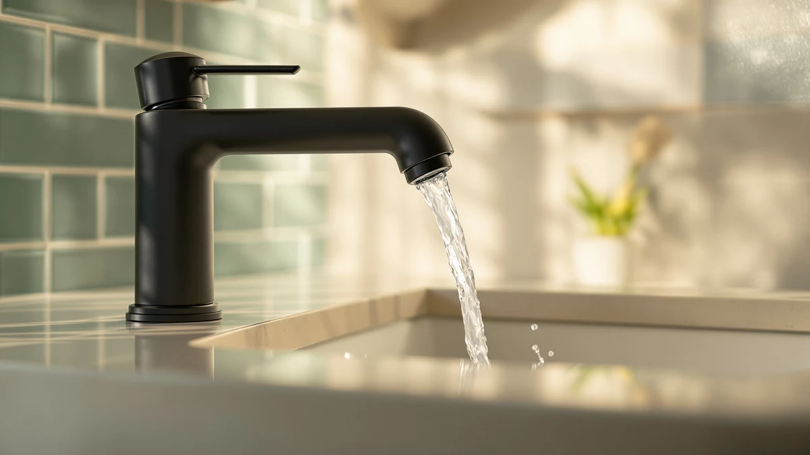

How to Fix a Leaky Bathroom Faucet: DIY Repair Guide (2026)
Prices and picks verified as of August 2026. Independent, reader-supported reviews.


Things to Know Before You Buy
- Most bathroom faucet leaks come from a worn cartridge, washer, or O-ring, not a defective faucet.
- Shutting off the water supply completely is the step people skip, and it's the one that causes the biggest mess.
- Replacement cartridges are brand-specific, so bring the old part to the hardware store or match it by faucet brand and model number.
- The repair itself usually takes under 35 minutes and costs less than 20 dollars in parts.
- If the valve body itself is corroded, no cartridge will fix the leak, and replacing the faucet becomes the faster, cheaper option.
Knowing how to fix a leaky bathroom faucet saves you the cost of a plumber visit for what is usually a 20-dollar part and thirty-five minutes of your Saturday. A faucet that drips after you've shut it off almost always comes down to one worn component inside the handle, a cartridge, a washer, or a set of O-rings that has hardened or cracked from years of mineral buildup and daily use.
You don't need plumbing experience for this repair, but you do need to work through the steps in order and match the replacement part to your faucet's brand and model. Skip a step, like forgetting to fully shut off the water, and you'll be mopping up a bathroom instead of fixing one. Here's the process from diagnosis to a dry sink.
What You'll Need
- Supplies: a replacement cartridge or washer kit matched to your faucet brand, plumber's grease, and replacement O-rings
- Tools: an adjustable wrench, a flathead and Phillips screwdriver set, and an Allen wrench if your handle uses a set screw
Step 1: Shut off the water supply
Look under the sink for two small oval valves, one for hot water and one for cold, usually mounted on the supply lines where they meet the wall. Turn each one clockwise until it stops. If your bathroom doesn't have individual shutoffs, close the main water valve for the house instead.
With the valves closed, turn the faucet handle to the open position and let it run until no more water comes out. This relieves pressure in the lines and confirms the shutoff worked; if water still trickles out, one of the valves isn't fully closed. Plug the drain before you start disassembly so small screws and parts don't end up lost in the pipe.
Step 2: Remove the faucet handle
Most single-handle bathroom faucets hide a small screw under a plastic or metal cap on top of the handle. Pry the cap off with a flathead screwdriver or a butter knife, then use a Phillips or Allen wrench, depending on the screw head, to loosen the set screw underneath. Keep the screw and cap somewhere you won't lose them.
Once the screw is out, the handle should lift straight up off the stem. If it's stuck from years of mineral deposits, wiggle it gently side to side rather than prying at an angle, which can crack the housing. Two-handle faucets follow the same logic on each side; repeat the process for both handles if both are leaking.
Step 3: Replace the worn cartridge or washer
With the handle off, you'll see a retaining nut or clip holding the cartridge in place. Loosen it with the adjustable wrench, then pull the old cartridge straight out. Compression faucets use a screw-in stem with a rubber washer at the bottom instead of a cartridge; unscrew the stem to reach the washer.
This is where matching brand and model matters most. Take the old cartridge or washer to the hardware store, or check the faucet body for a stamped model number, and buy the exact replacement. Coat the new cartridge's O-rings with plumber's grease before inserting it, then seat it fully into the faucet body and tighten the retaining nut back down by hand plus a quarter turn with the wrench.
Step 4: Reassemble the faucet
Slide the handle back onto the stem in the same orientation it came off, lining up any flat edges or notches so it seats fully. Insert and tighten the set screw, snug but not overtightened, then press the decorative cap back into place until it clicks or sits flush.
Check that the handle moves smoothly through its full range before you move on. If it feels gritty or catches, the cartridge probably isn't seated all the way. Back the retaining nut off a quarter turn, reseat the cartridge, and retighten.
Step 5: Turn the water back on and test for leaks
Open the shutoff valves slowly rather than all at once; sudden pressure can loosen a fitting you just tightened. Run the faucet through hot and cold water for a full minute, watching the base, the handle, and the connections under the sink for any sign of moisture.
Dry everything with a paper towel and check again after a few minutes. A slow drip that shows up only after the faucet sits idle usually means the cartridge isn't fully seated or the O-rings need another light coat of grease. If the leak is gone and stays gone through several on-off cycles, the repair is done.
Common Mistakes to Avoid
The most common mistake is skipping the water shutoff step entirely, or assuming the valves are closed when they're only partially turned. Test by opening the faucet after closing the valves; if water still comes out, keep turning before you touch anything else. Working on a pressurized line is how a simple faucet repair turns into a flooded vanity cabinet.
The second mistake is buying a generic replacement cartridge instead of one matched to your faucet's brand and model. Faucet manufacturers use proprietary cartridge designs, and a close-enough part will either not fit or will leak again within weeks. Bring the old cartridge with you when you shop, or look up the exact part number using the faucet's model stamp.
Overtightening is another frequent error. Cranking the retaining nut or set screw as hard as possible doesn't create a better seal; it strips threads, cracks plastic housings, and makes the next repair harder. Hand-tight plus a quarter turn with the wrench is enough for most faucets.
Finally, don't assume a new cartridge fixes every leak. If water drips from where the faucet meets the sink deck rather than from the handle, the problem is a failed base gasket or supply line connection, not the cartridge, and it needs a different fix.
Our Top Picks
Whether you're picking up parts for this repair or planning ahead for what comes next, these three products come up often in bathroom faucet projects.

Editor's Pick
Faucet Extender for Toddlers -
A soft silicone extender that routes water toward small hands, useful if you're already elbow-deep in faucet maintenance and want to make the sink easier for kids to reach on their own.
$5.66
Check Price on Amazon
Best Value
KOMIDK Faucet Extender for Bathroom
A similar extender to the pick above with a slightly different reach and fit, worth comparing if the first one doesn't match your faucet's spout shape.
$7.99
Check Price on Amazon
Premium Choice
Bathroom Faucet Brushed Nickel Modern
If you get the old faucet apart and find the valve body corroded or cracked rather than just the cartridge worn out, this single-handle brushed nickel faucet is a straightforward full replacement instead of a repair.
$29.99
Check Price on AmazonFrequently Asked Questions
Can I fix a leaky bathroom faucet without turning off the water?
No. Even a slow drip means the line is still pressurized, and opening the faucet body under pressure sprays water everywhere and can damage the cartridge seat. Always close the shutoff valves and drain the line before you start.
How do I know if I need a new cartridge or a new washer?
It depends on your faucet type. Single-handle faucets almost always use a cartridge, while older two-handle compression faucets use a rubber washer at the base of a screw-in stem. Take the handle off and look: a cylindrical cartridge means you need a cartridge, and a stem with a washer screwed onto the bottom means you need a washer kit.
Why does my faucet still drip after I fixed a leaky bathroom faucet myself?
The most common reason is a cartridge that isn't fully seated or O-rings that need fresh plumber's grease. Less often, the valve body itself is scored or corroded, and no amount of new cartridges will stop the leak. At that point, replacing the faucet is more reliable than repeating the repair.
How much does it cost to fix a leaky bathroom faucet?
Parts alone run 10 to 25 dollars for a cartridge or washer kit, O-rings, and plumber's grease. Hiring a plumber for the same repair typically costs 100 to 250 dollars once you add the service call, so doing it yourself saves real money on a job that takes well under an hour.
How long does a faucet cartridge last before it leaks again?
Most cartridges last 5 to 10 years under normal use, though hard water accelerates wear by coating the O-rings and seats with mineral deposits. If you're on well water or a hard water system and the faucet has leaked more than once, look for a cartridge rated for hard water conditions when you replace it again.
Verdict
Learning how to fix a leaky bathroom faucet comes down to patience more than skill: shut off the water, open the fixture without forcing anything, and replace the one worn part causing the drip. Most households handle the whole repair in under 35 minutes with a wrench, a screwdriver, and a cartridge or washer kit that costs less than 20 dollars. If you get the faucet apart and find the valve body corroded or the original cartridge long discontinued, replacing the fixture outright, something like the VOTON brushed nickel faucet in the picks above, saves more time than hunting for an obsolete part. Whichever path you take, the repair holds as long as you match the replacement to your faucet's exact brand and model and avoid overtightening the retaining nut during reassembly. Run the faucet through a few full hot-and-cold cycles afterward and check every connection while it's under pressure. If it stays dry through that test, the leak is fixed for good.